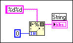

The format string wired to this node has more format specifiers (% codes) than parameters. There should be one format specifier for each parameter.
Although the format string %d%d in the previous block diagram indicates there should be two numeric inputs, only one is present on the node.
To correct this error, expand the node to create as many input or output terminals as needed. You need to wire any new inputs to run the VI.
Alternatively, you can remove the extra % code specifier(s) to correct this error.